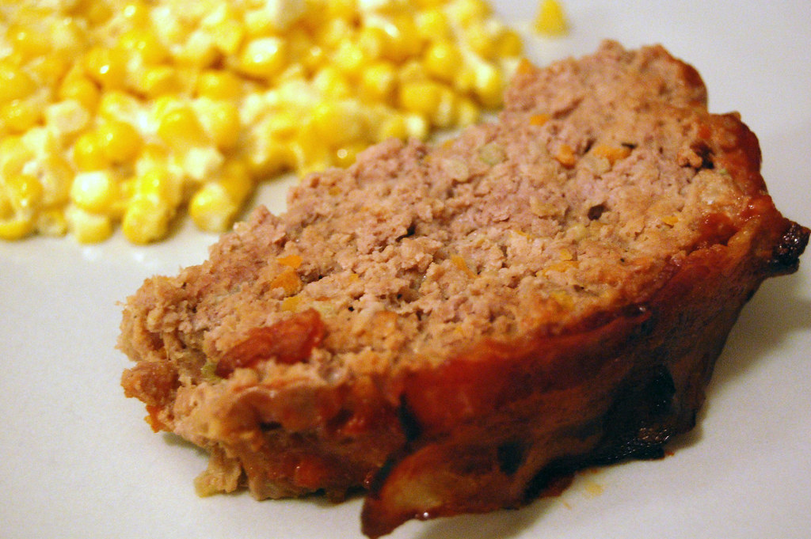

Home
Mama's Meatloaf

Meatloaf Slice by Su-lin,
licensed under CC 2.0.
Description
My Mama's classic and easy meatloaf that I have loved since I was a child.
Ingredients
- 2lb Ground Beef
- 1 Pack Meatloaf Seasoning
- 2 eggs
- 1/4 cup milk
- 1 cup Italian Breadcrumbs
- 1 White Onion (diced)
- 1 Bottle of Ketchup
Instructions
- Preheat oven to 350°F
- In a large bowl combine meat, seasoning, eggs, milk, breadcrumbs, and onion.
- Add meat mixture to a square baking dish.
- Press down to fill entire dish and form a flat surface on top.
- Generously coat top of meat mixture with ketchup.
- Bake until internal temperature reaches 160°F. About 60 minutes.
- Let the meatloaf cool for 10 to 15 minutes before slicing.
- Cut into preferred size portions and serve.